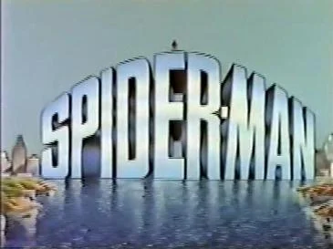

Spider-Man (1981 - 1982)
| Show | First Aired | Image |
|---|---|---|
| Spider-Man Animated · Syndication · 26 episodes |  |
| Overview |
|---|
Spider-Man is a 1981–82 American animated TV series based on the Marvel Comics character of the same name. It is the second Spider-Man cartoon, following the 1967 series. |
| Detail | Value |
|---|---|
| Format | Animated |
| Network | Syndication |
| First aired | September 12, 1981 |
| Last aired | March 6, 1982 |
| Episodes | 26 |
| Running time | 22 minutes |
| Created by | Stan Lee |
| Based on | Spider-Man by Stan Lee and Steve Ditko |
| Starring | Ted Schwartz, Lee Bailey, Linda Gary, Morgan Lofting, Mona Marshall, William Woodson |
| Executive producers | David H. DePatie, Lee Gunther |
| Music | Johnny Douglas |
| Production companies | Marvel Productions |
| Country | United States |
Overview and details are from Wikipedia (CC BY-SA 4.0).